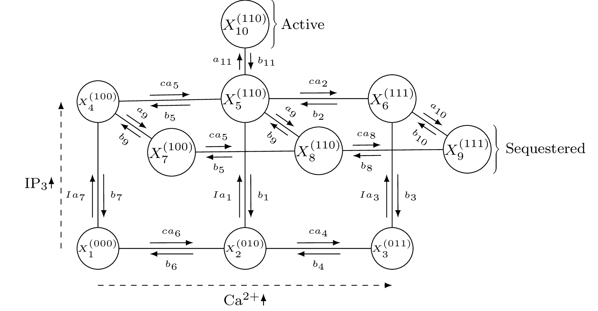
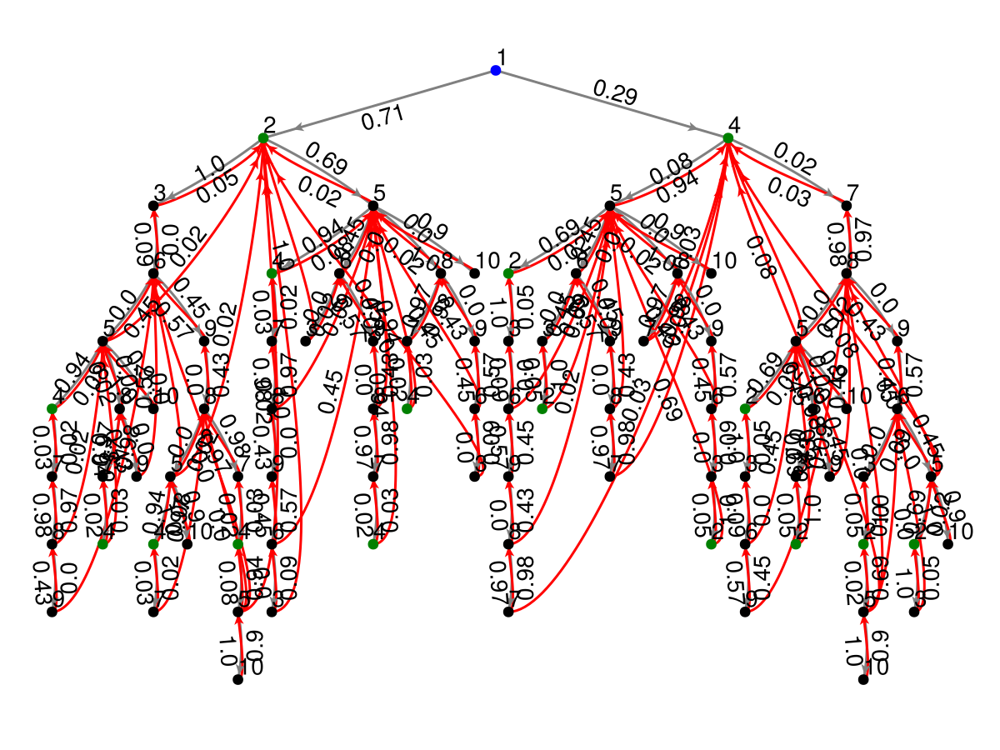

CHMC (ion channels)
This section demonstrates how to use the functions in MarkovWeightedEFMs.jl to analyze the steady state dynamics of the following ion channel with three possible binding sites reproduced from (Bicknell and Goodhill)[https://doi.org/10.1073/pnas.1604090113].

Markov state model of IP3 channel activity
Rate constants
using MarkovWeightedEFMs
# Parameters
c = 0.1 # Ca2+ (uM)
I = 0.1 # IP3 (uM)
a1 = 50
a2 = 0.035
a4 = 3.5
a5 = 65
a6 = 25
a7 = 10
a8 = 0.035
a9 = 0.15
a10 = 1.25
a11 = 110
b1 = 2.5
b2 = 1.25
b3 = 0.25
b4 = 12.5
b5 = 10
b7 = 0.25
b9 = 0.2
b10 = 2.5
b11 = 20
K1 = b1 / a1
K2 = b2 / a2
K4 = b4 / a4
K5 = b5 / a5
K7 = b7 / a7
K9 = b9 / a9
K10 = b10 / a10
a3 = (b3 * K4) / (K1 * K2)
b6 = (a6 * K5 * K7) / K1
b8 = (a8 * K2 * K10) / K9Generator and transition matrix
# Markov transition rate matrix
Q = [#
0 c*a6 0 I*a7 0 0 0 0 0 0
b6 0 c*a4 0 I*a1 0 0 0 0 0
0 b4 0 0 0 I*a3 0 0 0 0
b7 0 0 0 c*a5 0 a9 0 0 0
0 b1 0 b5 0 c*a2 0 a9 0 a11
0 0 b3 0 b2 0 0 0 a10 0
0 0 0 b9 0 0 0 c*a5 0 0
0 0 0 0 b9 0 b5 0 c*a8 0
0 0 0 0 0 b10 0 b8 0 0
0 0 0 0 b11 0 0 0 0 0
];
# Markov transition probability matrix
T = Q ./ sum(Q, dims=2)10×10 Matrix{Float64}:
0.0 0.714286 0.0 … 0.0 0.0 0.0
0.26441 0.0 0.0481227 0.0 0.0 0.0
0.0 0.996016 0.0 0.0 0.0 0.0
0.0362319 0.0 0.0 0.0 0.0 0.0
0.0 0.0203826 0.0 0.00122296 0.0 0.896835
0.0 0.0 0.0909091 … 0.0 0.454545 0.0
0.0 0.0 0.0 0.970149 0.0 0.0
0.0 0.0 0.0 0.0 0.00034302 0.0
0.0 0.0 0.0 0.428571 0.0 0.0
0.0 0.0 0.0 0.0 0.0 0.0Enumerating EFMs and computing their probabilities
The Markov state model contains 39 EFMs. If one were to simulate trajectories from this model for an infinite period of time and decompose these trajectories into simple cycles, the resulting frequencies would converge on the following EFM probabilities. For example, the active-inactive-active transition involving states 10-5-10 occurs ~83.8% of the time on average in this model.
res = steady_state_efm_distribution(T);
# EFMs/simple cycles and their corresponding probabilities
reduce(hcat, [res.e, res.p])39×2 Matrix{Any}:
[8, 5, 8] 0.000463084
[10, 5, 10] 0.838116
[7, 8, 7] 0.0564629
[6, 5, 8, 9, 6] 2.84498e-6
[6, 9, 6] 1.82727e-5
[9, 8, 9] 1.16059e-5
[2, 1, 4, 7, 8, 9, 6, 5, 2] 1.00348e-7
[2, 5, 2] 0.0172035
[6, 3, 6] 6.73059e-7
[2, 1, 4, 5, 6, 3, 2] 3.12821e-7
⋮
[2, 1, 4, 5, 8, 9, 6, 3, 2] 5.35722e-8
[2, 1, 4, 7, 8, 9, 6, 3, 2] 1.01175e-7
[4, 1, 2, 3, 6, 5, 8, 7, 4] 2.79855e-9
[4, 1, 2, 3, 6, 9, 8, 7, 4] 1.01175e-7
[2, 1, 4, 5, 2] 0.00182393
[2, 1, 4, 7, 8, 5, 2] 1.63344e-5
[4, 1, 2, 3, 6, 9, 8, 5, 4] 5.35722e-8
[4, 1, 2, 5, 4] 0.00182393
[4, 1, 2, 5, 8, 7, 4] 1.63344e-5Visualizing the CHMC
The blue node represents state 1 and is the root of the tree. All green nodes return back to the blue node but these arrows are hidden to limit visual clutter.
using GLMakie
GLMakie.activate!()
plot_chmc(T, 1) # arbitrarily rooted on state 1